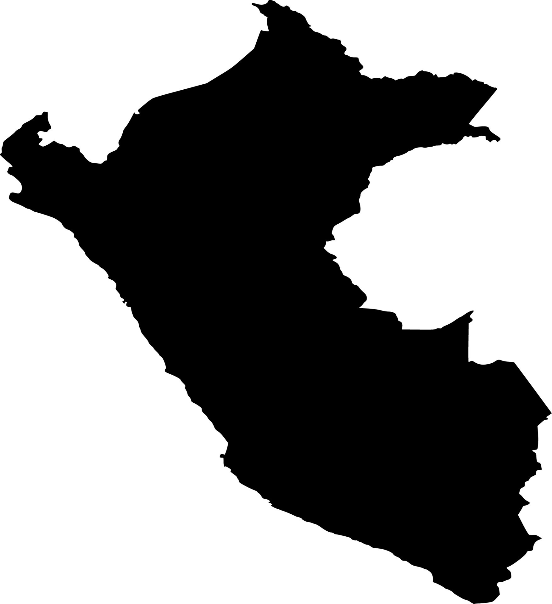
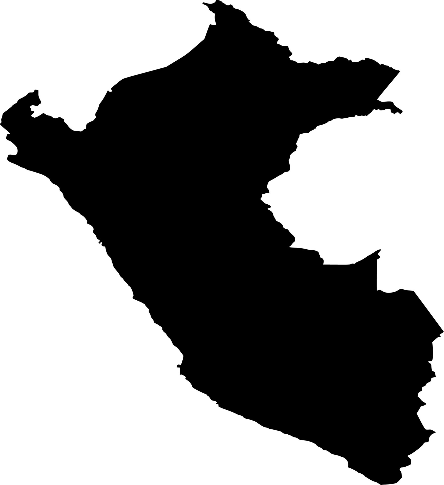
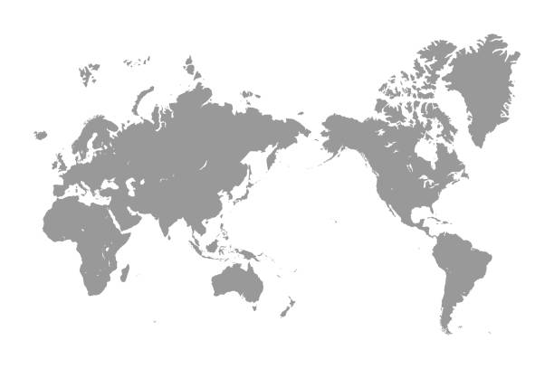
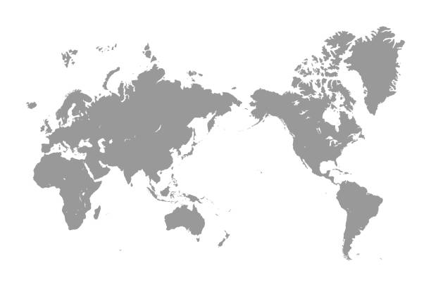

Originating in Southwestern India, jackfruit is known for its size and unique flavor, playing a significant role in local cuisines.
Ugli fruit, a type of tangelo, was developed in Jamaica and is valued for its juicy, tangy flavor, a cross between grapefruit, orange, and tangerine.

Quinces, originating in Southwest Asia, Iran, and Turkey, have been cultivated since ancient times for their fragrant fruit, used in cooking and perfumery.

Loganberry, a cross between blackberry and raspberry, was developed in the United States and is known for its unique flavor.
 

The potato was first domesticated in the region of modern-day southern Peru and extreme northwestern Bolivia between 8000 and 5000 BC.

Kohlrabi, a member of the cabbage family, has been grown in Europe since Roman times, known for its turnip-like stem.

Garlic has been known to human civilization for thousands of years and was widely used by ancient civilizations for its culinary and medicinal properties in Central Asia and northeastern Iran.
Onions have been cultivated for thousands of years in Central Asia, Iran, and West Pakistan, valued both as food and for their medicinal properties.
 

Cauliflower, originating in the Eastern Mediterranean, was a popular vegetable in the ancient world and has a long history in Turkey and Italy.


Parsnips, native to Eurasia, were a common staple in the medieval diet, valued for their sweetness and nutritional value.
Jicama, a crispy, sweet root vegetable, has been cultivated in Mexico since pre-Columbian times.
Daikon, a type of radish, has been grown in East Asia for centuries, valued for its mild flavor and versatility.

Yucca, cultivated in South America a staple in South American diets, has been cultivated for its starchy tuberous root.
Taro, a root vegetable with a long history, has been an important food crop in Southeast Asia and Southern India for thousands of years.
Horseradish, native to southeastern Europe and western Asia, has been cultivated since antiquity for its pungent root.

Fennel, native to the Mediterranean, has been used since ancient times for its aromatic seeds and flavorful bulbs.
Coconuts, found throughout the Indo-Pacific region, have been used by seafaring peoples for millennia, valued for their versatility and nutritional content.

Lychees, valued for their fragrant and sweet flavor, have been cultivated for over 2000 years in Southern China, featured in ancient Chinese literature.

Sapodilla, native to Southern Mexico, Central America, and the Caribbean, is known for its sweet, malty flavor.
Durian, with its distinctive smell, originated in Southeast Asia, particularly in regions like Borneo and Sumatra, and is revered in many Asian cultures.